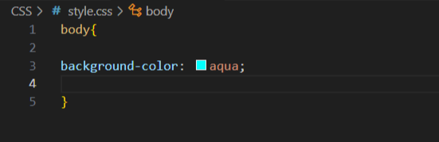

Le CSS est l'acronyme de "Cascading Style Sheets" (Feuilles de style en cascade). En HTML, il est utilisé pour
définir la présentation et la mise en forme des pages web, ce qui inclut la couleur, la police, la taille
du texte, la disposition, les marges, les bordures, etc.
Pour ajouter du CSS sur notre page, nous allons devoir lier notre fichier CSS (nommé "style.css" et stocker
dans un dossier CSS) à notre fichier HTML, et pour ce faire, nous allons faire comme dans l'éxemple ci-dessous :
La syntaxe de base d'une règle CSS, comprend un sélecteur, des propriétés et des valeurs.
Voici un exemple de syntaxe (désolé pour la qualité) :
La propriété "color" est utilisé pour définir la couleur du texte
Ex : color: aqua;
La propriété "font-size" est utilisé pour définir la taille d'un élément de votre page.
Ex : font-size: 150%;
La propriété "margin" est utilisé pour définir l'éspace éxterieur d'un élément, on peut ciblé un coté avec les attributs
top; bottom; right; left.
Ex : margin-bottom: 20%;
La propriété "padding" est utilisé pour définir l'éspace interieur d'un élément, on peut donc agrandir un éspace.
Tout comme la propriété "margin", on peut ciblé un coté avec les attributs top; bottom; right; left.
Ex : padding-right: 40%;
La propriété "background-color" est utilisé pour définir la couleur de l'arrière plan de votre page.
Ex: background-color: black;